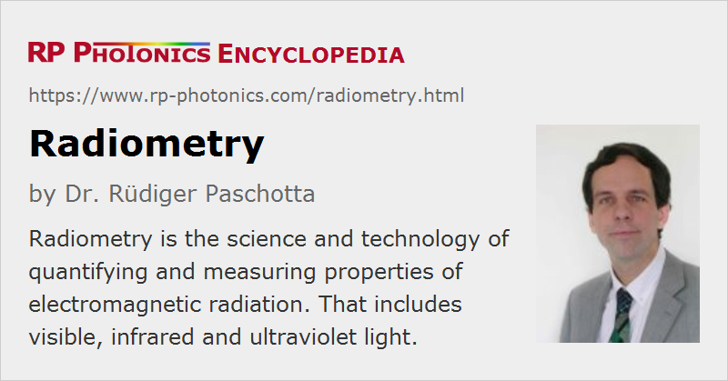

Radiometry
Definition: the science and technology of measuring properties of electromagnetic radiation, including light
German: Photometrie
Categories: general optics, light detection and characterization
How to cite the article; suggest additional literature
Author: Dr. Rüdiger Paschotta
Radiometry is the science and technology of quantifying and measuring essential properties of electromagnetic radiation. That includes visible light, infrared and ultraviolet light as well as radio waves and X-rays, for example. In contrast to photometry, the visibility of the radiation and its perceived brightness is not of interest in this field; one is dealing with purely physical quantities, not involving properties of the human eye.
Radiometry provides precisely defined quantities as the basis for further work. Various kinds of radiometric measurement instruments have been developed for measuring such quantities.
Radiometric Quantities
The development of radiometry has led to a quite systematic and well-defined system of radiometric quantities. Some of the used terms and their precise definitions had to be revised for that purpose. However, older terms and deviating meanings are still widespread not only in older literature, but also because many professionals working primarily with optics and laser technology, for example, but not specifically in radiometry, have not (or not fully) adopted the suggested terms and definitions. The following table also specifies such alternative terms which are used particularly in optics and laser technology:
| Quantity | Symbol | Alternative term | Units | Remarks |
|---|---|---|---|---|
| radiant energy | Qe | optical energy, pulse energy | joule (J) | total radiated energy, e.g. of a light pulse |
| radiant energy density | we | optical energy density | J/m3 | applied e.g. to blackbody radiation |
| radiant flux | Φe | radiant power, optical power | W = J/s | radiant energy per unit time |
| spectral flux | Φe,ν or Φe,λ | optical power spectral density | W/Hz or W/nm | radiant flux per unit frequency or wavelength |
| radiant intensity | Ie,Ω | W/sr | radiant flux per unit solid angle | |
| spectral intensity | Ie,Ω,ν or Ie,Ω,λ | W sr−1 Hz−1 or W sr−1 nm−1 | radiant intensity per unit frequency or wavelength | |
| radiance | Le,Ω | brightness (not recommended) | W sr−1 m−2 | radiant flux per unit area and unit solid angle |
| spectral radiance | Le,Ω,ν or Le,Ω,λ | W sr−1 m−2 Hz−1 or W sr−1 m−2 nm−1 | radiance per unit frequency or wavelength | |
| irradiance | Ee | flux density | W/m2 | received radiant flux on a surface |
| spectral irradiance | Ee,ν or Ee,λ | W m−2 Hz−1 or W m−2 nm−1 | irradiance per unit frequency or wavelength | |
| radiosity | Je | W/m2 | radiant flux per unit area, leaving a surface (by emission, reflection or transmission) | |
| spectral radiosity | Je,ν or Je,λ | W m−2 Hz−1 or W m−2 nm−1 | radiosity per unit frequency or wavelength | |
| radiant exitance | Me | W/m2 | like radiosity, but counting only emitted radiation | |
| spectral exitance | Me,ν or Me,λ | W m−2 Hz−1 or W m−2 nm−1 | radiant exitance per unit frequency or wavelength | |
| radiant exposure | He | J/m2 | received radiant energy per unit area, equal to the time-integrated irradiance | |
| spectral exposure | He,ν or He,λ | J m−2 Hz−1 or J m−2 nm−1 | radiant exposure per unit frequency or wavelength | |
| hemispherical emissivity | ε | radiant exitance relative to that of a blackbody at the same temperature | ||
| hemispherical absorptance | A | fraction of absorbed radiant flux on a surface | ||
| hemispherical reflectance | R | fraction of reflected radiant flux on a surface | ||
| hemispherical transmittance | T | fraction of transmitted radiant flux on a surface | ||
| hemispherical attenuation coefficient | μ | m−1 | fraction of absorbed or scattered radiant flux per unit length |
The subscript “e” of many of those quantities (which is frequently omitted) indicates that they refer to physical energies rather than to visual impressions (“v”) as in photometry. For most radiometric quantities, there is a related photometric quantity, for example radiant flux ↔ luminous flux, radiant intensity ↔ luminous intensity, radiance ↔ luminance, irradiance ↔ illuminance, etc.
Radiometric quantities can be applied not only to visible light, but also to infrared light, ultraviolet light and radiation in other spectral regions.
There is a related field named actinometry, which refers to photon numbers instead of energies. For example, one uses a photon flux in units of m−2 s1, where radiometry deals with a radiant flux in units of W/m2 = J m−2 s−1.
Spectral and Integral Quantities
Some of those quantities are spectral quantities, referring to some unit frequency or wavelength interval. Their symbols contain “ν” or “λ” in the subscript. By integration of those over all optical frequencies or wavelengths, respectively, one obtains the corresponding integral quantities. For example, the radiant intensity equals the frequency- or wavelength-integrated spectral radiant intensity.
See the article on spectral quantities for more details.
Quantities Related to Solid Angles
There are also various quantities like Ie,Ω which refer to unit solid angles, and their integration over all solid angles (often only over a hemispherical region, i.e., a total solid angle of 2π) one obtains the corresponding integral quantities. Note that in cases a factor like cos θ is involved in the integrand.
For some of the listed quantities, e.g. for the hemispherical absorptance, the corresponding spectral quantities or angle-resolved quantities are not listed in the table above; they are defined in completely analogous ways.
Radiometric Instruments
Various types of instruments can be used for measuring radiometric quantities:
- Optical power meters can be used for measuring a radiant flux, e.g. generated by a laser, and optical energy meters for a radiant energy.
- For highly divergent light, such devices are normally not usable. Here, one may need to use an integrating sphere in conjunction with a suitable detector, e.g. a bolometer or a pyroelectric detector.
- A photodiode can be used for measuring an irradiance, if it is calibrated for the wavelength of some quasi-monochromatic light and its active area is small enough for the required spatial resolution. The irradiance is the radiant flux divided by the active area. For measuring the irradiance over a larger area with high spatial resolution, one may use a kind of image sensor.
Related quantities such as the radiance of a light source are usually calculated from other measured values, e.g. from the irradiance at a location in some distance from the source.
The term radiometer can be understood as referring to any instruments measuring radiometric quantities. However, it is most common for instruments measuring quantities of invisible radiation.
Suppliers
The RP Photonics Buyer's Guide contains 3 suppliers for radiometers.
Questions and Comments from Users
Here you can submit questions and comments. As far as they get accepted by the author, they will appear above this paragraph together with the author’s answer. The author will decide on acceptance based on certain criteria. Essentially, the issue must be of sufficiently broad interest.
Please do not enter personal data here; we would otherwise delete it soon. (See also our privacy declaration.) If you wish to receive personal feedback or consultancy from the author, please contact him e.g. via e-mail.
By submitting the information, you give your consent to the potential publication of your inputs on our website according to our rules. (If you later retract your consent, we will delete those inputs.) As your inputs are first reviewed by the author, they may be published with some delay.
See also: photometry, radiant flux, radiance, spectral quantities
and other articles in the categories general optics, light detection and characterization
|  |
If you like this page, please share the link with your friends and colleagues, e.g. via social media:
These sharing buttons are implemented in a privacy-friendly way!